Coded by Jake Cupani © 2019
A project designed to help students find parking on campus.
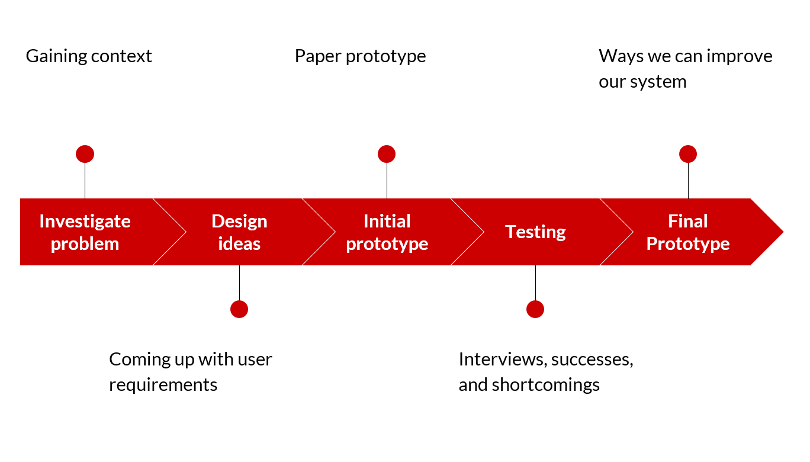
The Process:
Identifying the Problem
Being students at the University of Maryland, my team and I were well aware that many students have trouble finding legal parking spots. We hear all the time from other students how confusing and difficult it is for people to park when they don't have a permit. Many parking spaces are reserved for those with a permit, so finding the ones that aren't reserved is a big problem for a lot of students.
Iterating
In this project we emphasized the importance of following the Double Diamond Model of Design. This model helped guide us in the iteration process by first "diverging" by exploring different ideas and possibilities before we "converged" on our best idea.
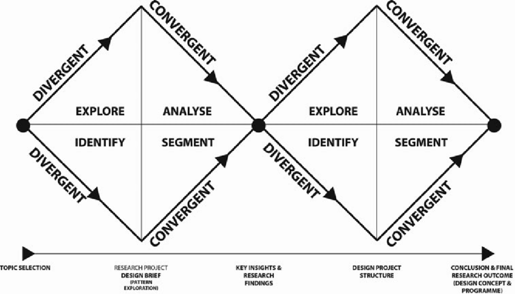
In the "diverging" phase, we developed a WAAD to help spread out our ideas from our interviews with students on what they believe were the biggest frustrations
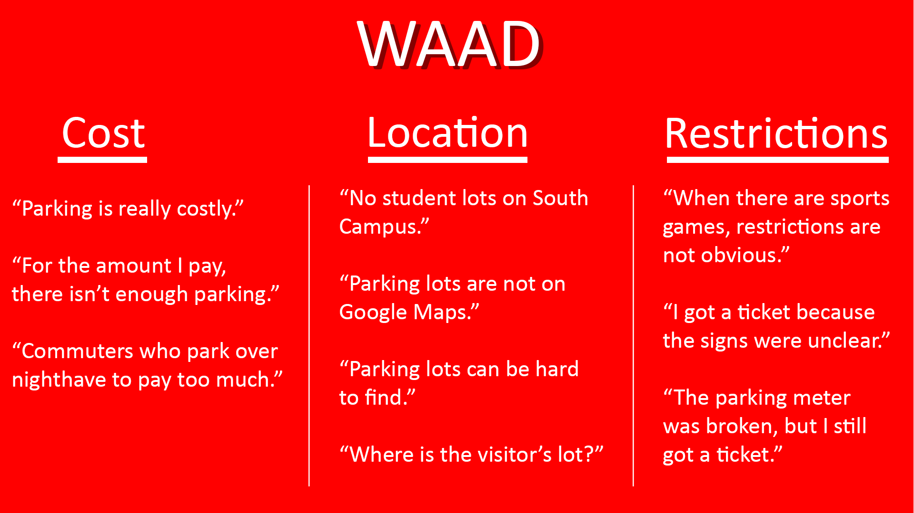
While still in the diverging process, we came up with multiple different ideas for our application, here are just a few quick story boards we did.
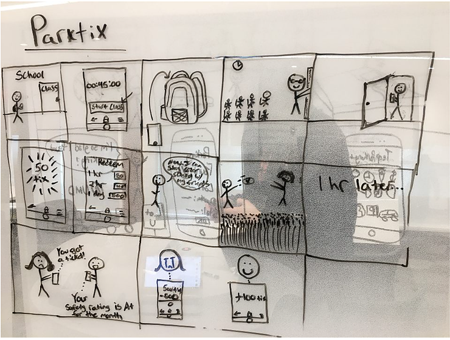
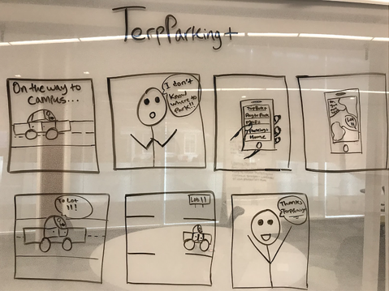
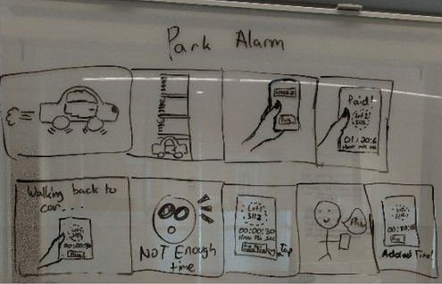
Paper Prototype
The next part of our project was to create low-fidelity paper prototypes. These prototypes served as a jumping off point for when we actually dove into Illustrator to make the Final Prototypes. Here are a few snapshots of our paper prototypes.
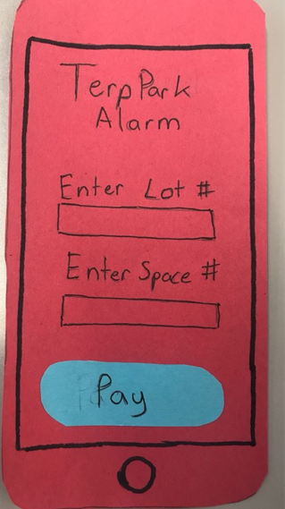
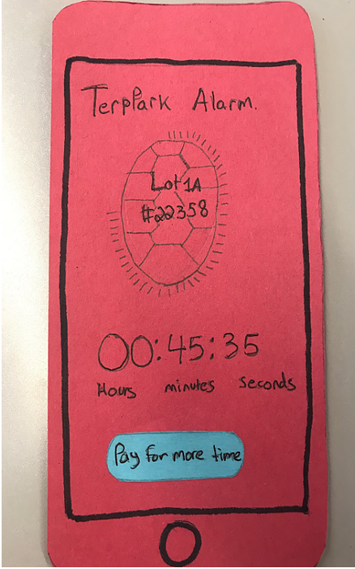
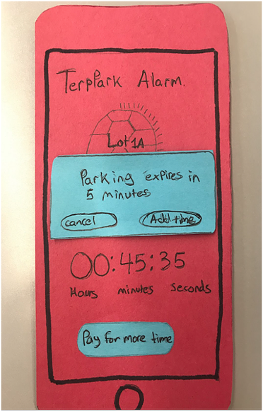
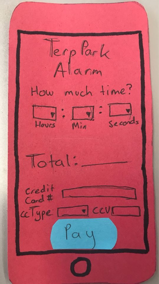
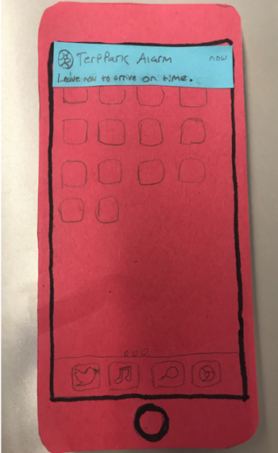
Final Prototype
After our paper prototypes, we took our ideas and transferred them to Adobe Illustrator, where we made the following high-fidelity mockups.
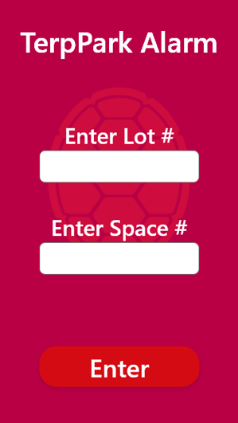
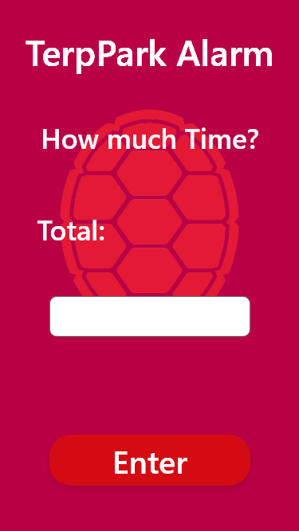
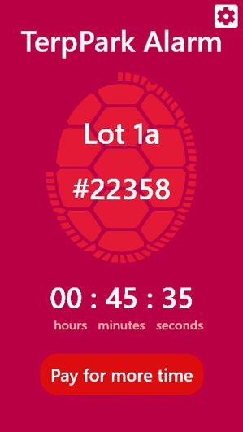
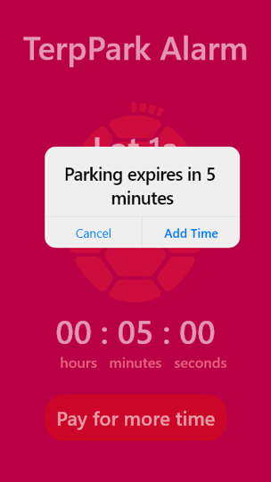
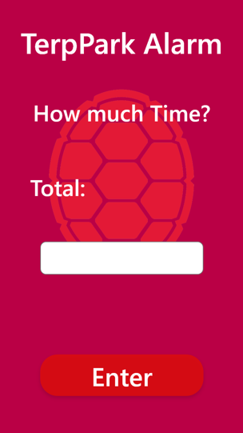
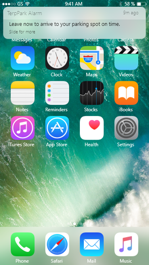
What We Learned
This project was a great initial experience for me to learn more about the design process and really helped solidify my understanding of the fundamentals of the Design Thinking process.